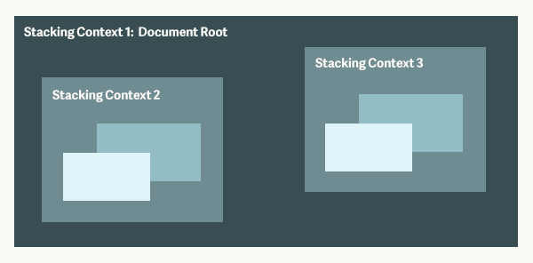

Z-index and Layering with CSS
Before we start
Agenda
- Z-index and positioning
- What is stacking order?
- What is stacking context?
- CSS3 properties that cause layering
- Troubleshooting CSS layering tips
What's z-index used for?

Z-index changes stacking order and creates a stacking context.
Normal document flow
To use z-index, need positioning. Can elements overlap if there's no positioning?
What is positioned?
z-index applies only to objects that have the position property set to fixed, absolute, or relative, aka "positioned elements".
On positioned elements, can use top/left/right/bottom to nudge element to corners, and z-index.
position: fixed;position: absolute;position: relative;Change layering with CSS only
Why does z-index 'not work?'
Answer: stacking context on div#3
Stacking context is a group of elements with a common parent that move forward or backward together (atomically) in the stacking order. 
Which CSS properties create stacking context?
- html
- Positioned element with z-index:integer
- Element's opacity < 1, transform, filter, ... more on the next slide
CSS Filter creates a stacking context
Position: fixed on Chrome creates a stacking context
Opacity < 1 creates a stacking context
Even if the element is not positioned! If an element with opacity less than 1 is not positioned, paint the layer it creates as if it were a positioned element with z-index: 0 and opacity: 1.
Transform other than none creates stacking context
Transform-style: preserve-3d creates a stacking context
CSS Perspective creates a stacking context
Recap: stacking context vs stacking order

Troubleshooting CSS layering issues
- Are elements you want to reorder part of the same stacking context?
- Which ancestors are creating stacking contexts?
- Is the element positioned?
- Change elements' order in the DOM may be necessary.
CSS properties that cause stacking context
- Position: fixed on Chrome
- Z-index: integer with positioning
- Transform other than none
- Opacity < 1
- Transform-style: preserve-3d
- Perspective (not 0 or none)
- Filter